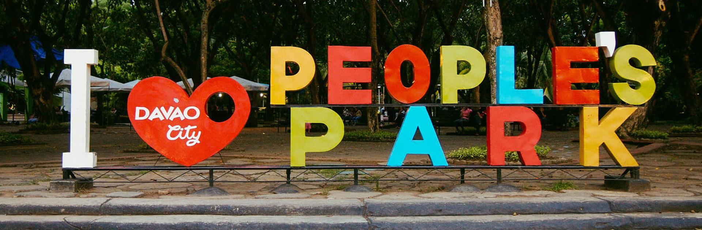
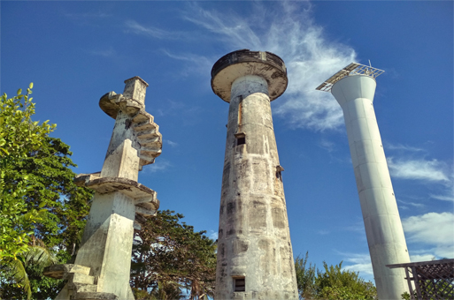
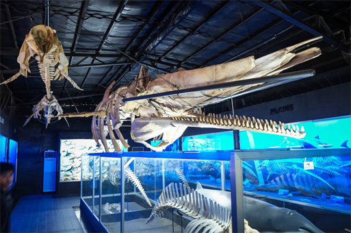
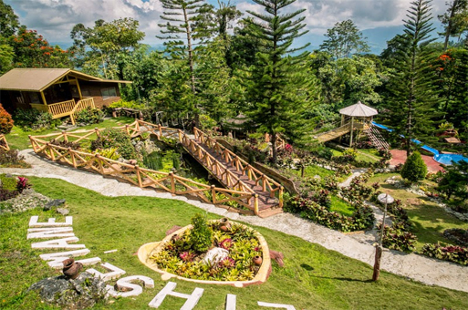

WELCOME TO DAVAO
Davao City, on the southern Philippine island of Mindanao, is a coastal commercial center near 2,954m-high Mount Apo, the country’s highest peak. In the city center, People’s Park is known for its colorful indigenous sculptures and lighted fountains. It's also home to Durian Dome, named after the pungent, spiky fruit that grows in abundance on Mindanao. The Davao River cuts through the city.
The Philippine eagle, the country's national bird and considered the largest eagle in the world, is endemic to Davao. The orchid waling-waling and fruits such as durians, marang, rambutans, pomeloes and mangosteens are popular and generally cheaper in the city. Tourist destinations in the city include the Philippine Eagle Foundation and Nature Center, Mount Apo, Gap Farming Resort, the Davao Crocodile Park, Malagos Garden Resort, Eden Nature Park, and People's Park in the city center which is popular for its sculptures of indigenous people and dancing fountain. Samal Island, a part of Metro Davao, is an island city situated immediately off the city's coast in the Davao Gulf, popularly known for its scenic beaches.
Photo


